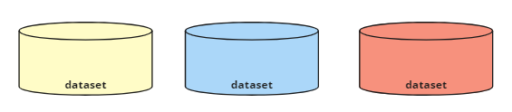
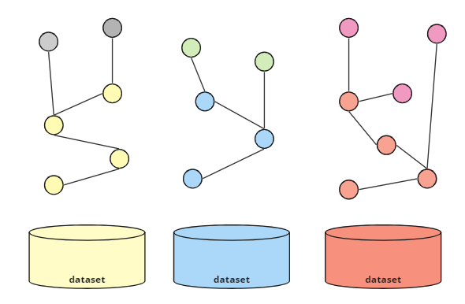

Informatiekundige Kern
Een kernprincipe bij de ontwikkeling van het federatief datastelsel is het concept van een informatiekundige kern. Deze informatiekundige kern ondersteunt het koppelen van eerder verspreide basisregistraties via een set vooraf gedefinieerde relaties (zie Stelsel van Basisregistraties). Dit hoofdstuk beschrijft wat ervoor nodig is om verschillende, onafhankelijke registers met elkaar te koppelen en en hoe dat binnen dit project concreet werd geïmplementeerd. Binnen dit project wordt uitgegaan van een federatief datastelsel op basis van Linked Data.
Onafhankelijke Registers
De basisregistraties (e.g. BRK, BAG, BRP en NHR) zijn relatief onafhankelijk van elkaar ontwikkeld door verschillende organisaties, techniek en modellen. Zo beheert Kadaster bijvoorbeeld de BRK en de KvK het NHR. Ook de modellering en standardisatie van de gegevens kan verschillen. Zo zijn, bijvoorbeeld, de NEN3610 en Geonovum's IM-modellen de basis voor de datasets van Kadaster terwijl deze standaarden minder van belang zijn bij andere registers. Door de onafhankelijke ontwikkeling van registers ontstaan zogenaamde data silo’s. Abstract wordt deze situatie als volgt gevisualiseerd.
|  |
|---|
| Registraties als losstaande silo's |
Registers als Linked Data
De bron van alle registers is vooralsnog geen Linked Data. Een ontwikkeling naar Linked Data toe zou kunnen door de bestaande situatie uit te breiden met een publicatie van de gegevens in Linked Data. Er zijn steeds meer implementaties en standaarden aanwezig om Linked Data te genereren vanuit een andere type bron zoals bijvoorbeeld een SQL database. Denk hierbij bijvoorbeeld aan RML of R2RML. Ook maakt JSON-LD de stap naar Linked Data wat makkelijker voor implementaties die werken met JSON denk bijvoorbeeld aan JSON api's. Het volgende diagram toont de creatie van Linked Data 'silo's voor elk van de oorspronkelijke gegevensbronnen.
 |
|---|
| Registraties beschikbaar gemaakt als Linked Data |
4 Star Linked Data: Omdat deze informatie nu als Linked Data wordt gepubliceerd met behulp van de verschillende open Linked Data-standaarden, kan deze informatie worden beoordeeld volgens het 5-sterrenmodel. Op dit moment worden de individuele Linked Data-silo's beoordeeld als 4-sterren Linked Data. De volgende stappen in deze sectie verbeteren deze beoordeling.
Door middel van een SPARQL endpoint kan er nu een federatieve query gemaakt worden die gegevens uit meerder endpoints raadpleegt. Om dit te kunnen doen, moet de gebruiker echter begrijpen waar de overlappingen bestaan tussen verschillende datasets, d.w.z. hoe de informatie die zich in deze zich bevindt moet worden verbonden om de informatie over verschillende endpoints te kunnen opvragen.
Formele Verbinding van Registers
Om precies te weten wat de data betekent en waar evt een overlap te vinden is die in meerdere registers aanwezig is, kan de data verrijkt worden met een context. Elk data element (of stuk instantie data) kan gekoppeld worden aan een linked data klasse (bv. een owl:Class) die o.a beschrijvingen, labels (in meerdere talen), en overige informatie kan bevatten. Door deze extra context is de data beter te begrijpen en makkelijker te bevragen door de gebruikers.
|  |
|---|
| Beschikbaar maken van een context |
De toevoeging van een dergelijke context verschijnt in de vorm van of een schema dat is gedefinieerd met behulp van Linked Data-standaarden of in de vorm van een geformaliseerde ontologie. Dit laatste is alleen beschikbaar als de context formele logica omvat (bijvoorbeeld het gebruik van axioma's) die inferencing ondersteunt.
Met de toevoeging van een schema of ontologie aan de instantiegegevens kan de overlap tussen verschillende registers voor gebruikers gemakkelijker te identificeren zijn. Dit kan gebaseerd zijn op het gebruik van dezelfde klassen of attributen in meerdere registers (bijvoorbeeld de aanwezigheid van BSN-nummers in zowel de BRK als de BRP) of op de mogelijkheid om geospatiale overlap tussen objecten uit te voeren. Dit laatste is vaak nuttig bij het identificeren van de relatie tussen georuimtelijke registers zoals de BAG en de BRK, waar de overlap tussen gebouwen en percelen voor veel gebruikers nuttig is.
Omdat deze overlappingen of schijnbaar gedeelde kenmerken nog niet als zodanig tussen registers zijn geformaliseerd, moeten deze door gebruikers worden geïdentificeerd en onderzocht voordat een federatieve query kan worden uitgevoerd. De relatie met andere registers is dus nog niet optimaal in deze situatie.
Idealiter zorg je voor formele koppelelementen die de registers adopteren en onderhouden. De geformaliseerde koppelelementen komen in twee vormen voor, of in de vorm van een upperontologie, of in de vorm van gematerialiseerde relaties tussen instantiegegevens over verschillende registers heen. Beide worden hieronder beschreven en sluit elkaar niet uit.
5 Star Linked Data: Wanneer één of beide van deze opties tussen basisregistraties worden geïntroduceerd, kunnen deze registers nu worden beoordeeld als 5-sterren linked data.
Optie 1: Upperontologie
Een upperontologie, of wellicht in FDS termen een Linked Data versie van een 'informatiekundige kern', definieert klassen en/of attributen die worden gedeeld tussen verschillende registers. Een upperontologie zou bijvoorbeeld het attribuut BSN-nummer kunnen definiëren als het identificatienummer van een persoon en zowel de BRP als de BRK kunnen dit attribuut gebruiken bij het publiceren van identificatiegegevens gerelateerd aan personen. Deze gedeelde kenmerken kunnen worden aangeduid als sleutelvelden.
 |
|---|
| Upperontologie beschikbaar gemaakt voor een bepaald set registers |
Een dergelijke upperontologie kan logisch worden gedefinieerd op basis van geïdentificeerde sleutelvelden maar om dit op een nuttige manier te kunnen implementeren voor gebruikers moeten de registers deze upperontologie en de bijbehorende afspraken ook adopteren. Door in beide registers hetzelfde attribuut te gebruiken dat in de upperontologie is gedefinieerd, kunnen gebruikers van deze gegevens er zeker van zijn dat het BSN-nummer in beide registers op dezelfde manier wordt gebruikt. Wanneer een identifier in het ene register overeenkomt met een identifier in een ander register dan weet je zeker dat deze verwijst naar dezelfde persoon in de BRP.
 |
|---|
| Linked data registers gecombineerd door het gebruik van een upperontologie |
Hiermee wordt het makkelijker om data uit één register te combineren met data uit een ander register. Bij het schrijven van een federatieve query kan dit BSN-nummer dus worden gebruikt om informatie over de percelen van een bepaalde persoon op te halen bij de BRK en de persoonsgegevens van deze persoon (bijvoorbeeld volledige naam, geboortedatum en huwelijksstatus) uit de BRP te halen.
Optie 2: Gematerialiseerde Relaties
Hoewel deze mogelijkheid er is door het uitvogelen van relaties tussen sleutelvelden uit de upperontologie zou het ook mogelijk zijn om extra relaties te kunnen afleiden en deze 'materialiseren'. Oftewel extra relaties kunnen (evt virtueel) toegevoegd worden. Deze materialisatie van relaties wordt niet gedefinieerd door de upperontologie maar tussen de instancegegevens in de registers zelf.
 |
|---|
| Materialiseren van extra relaties tussen registers |
Het materialiseren van relaties tussen registers is in verschillende scenario's logisch. Een voorbeeld is het formaliseren van relaties tussen registers op basis van hun ruimtelijke relatie met elkaar. Bijvoorbeeld de relatie tussen een bag:Verblijfsobject en de brk:Perceel waaraan dit object gerelateerd is op basis van zijn ruimtelijke nabijheid (overlappende geometrie bijvoorbeeld). In de praktijk kan de gebruiker door de introductie van deze geformaliseerde relatie zien welke bag:Verblijfsobjecten bij een bepaald brk:Perceel horen, maar bij uitbreiding ook welke adressen (bag:Nummeraanduiding) bij het perceel horen.
Een tweede voorbeeld is de materialisatie van relaties tussen instantiegegevens op basis van attributen vastgelegd in de upperontologie. Stel Kadaster legt eigendom van percelen van rechtspersonen vast met o.a. een kadaster:KVKnummer. Indien dit kadaster:KVKnummer als kenmerk gelijk gesteld wordt aan een KVKnummer in de upperontologie die vervolgens ook gelijkgesteld is aan NHR:InschrijvingsNummer dan zou je vanuit kadaster Percelen een directe relatie kunnen leggen naar een NHR inschrijving. Hiermee ontstaan er dus directe relaties tussen de registers.
De aanwezigheid van directe relaties tussen de registers maakt het nog makkelijker om federatieve bevragingen te doen. Integrale bevragingen zijn hierbij mogelijk maar ook bevragingen mbt consistentie zijn hierbij zeer makkelijk. Denk bijvoorbeeld aan de vraag welke BAG-Panden zijn onbekend bij Kadaster vanuit de NHR, Of vanuit de BRK, welke BRP personen zijn (on)bekend bij de BRP. Het schrijven van een dergelijke query is zeer eenvoudig. De uitvoering ervan zal natuurlijk qua performance wel het nodige vereisen. Linked data technologieën maken de introductie van deze directe relaties tussen instantiegegevens eenvoudig en illustreren een duidelijk voordeel van het gebruik van deze technologie ter ondersteuning van federatieve bevragingen.
Ontwerp van de Informatiekundige Kern
Het ontwerp van de informatiekundige kern zou zowel de introductie van een upperontologie moeten omvatten als de introductie van gematerialiseerde relaties tussen basisregistraties waar logische relaties bestaan. Er moeten afspraken worden gemaakt tussen de beheerders van de basisregistraties bij het ontwerpen van een dergelijke hogere ontologie en bij het onderhouden van eventuele gematerialiseerde relaties tussen de basisregistraties. Door ervoor te zorgen dat deze afspraken worden nageleefd, kan de gebruikerstoegankelijkheid en herbruikbaarheid van de basisregistraties als datastelsel worden gewaarborgd.
In de volgende secties worden de ingrediënten geïntroduceerd voor de testopstelling die is gedefinieerd binnen het Lock Unlock-project. Hierbij wordt een kleiner, fictief systeem van basisregistraties gecreëerd, een upperontologie wordt gedefinieerd en federatieve bevragingen worden ondersteund. In de volgende sectie worden de ontwerpkeuzes besproken die zijn gemaakt bij het definiëren van zo een upperontologie.